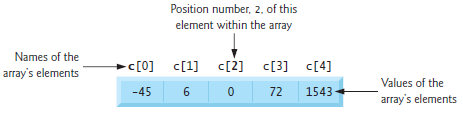

Week 5
Arrays
Arrays are data structures consisting of related data items of the same type. More specifically, an array is a group of elements of the same type stored contiguously in memory.

Accessing Elements of an Array
To access an element we specify the array name followed by a position number in
[]. This position number is also known as a subscript or index. The index
is 0-based so my_array[3] will be the fourth element of my_array.
Defining an Array
To define an array, we specify the type of the array followed by the number of elements
that will be in the array in []. For example, int my_arr[3]; will reserve a space that is
3 ints wide in memory and assign it the label my_arr.
In C arrays are static entities meaning that they remain the same size
throughout their lifetimes. That is, they can't be resized.
Note: in general we should use a #define statement for the size of an array so that
we can avoid using magic numbers
Looping over an Array.
When looping over an array, it is recommended to use a size_t type for the counter control variable.
#include <stdio.h>
int main(void)
{
for (size_t i = 0; i < 5; ++i)
{
n[i] = i;
}
}
Initializer Lists
We can define an array with an initializer list to set all the elements to specific values.
int n[5] = {32, 27, 64, 18, 95} will set n[0] to 32, n[1] to 27, etc.
The size of the initializer list does not need to be as large as the array. Any elements that are not specified
will be set to 0.
int n[5] = {0}; is equivalent to int n[5] = {0,0,0,0,0}.
Strings
A string in C is an array of char, terminated by a NUL character '\0' (ASCII 0). As a side note - an array of char does not necessarily need to be a string but a string is always and array of char.
There are a few ways to define a string:
// 1. String literal — auto-size, NUL added
char s1[] = "hello";
// 2. Fixed-size array with string literal — NUL added, extra space unused
char s2[10] = "hello";
// 3. Character array with initializer list — must manually add '\0'
char s3[] = { 'h', 'e', 'l', 'l', 'o', '\0' };
Note: for s2 style of defining a string, where we define the size we must
always make sure that the size can accommodate the '\0' at the end.
char s2[5] = "hello" would be invalid because all 5 spaces would be used up.
String Input
When we want to grab input from the user, we can define a fixed size buffer array to store the string in and then use a size format specifier to make sure we do not exceed the size of the buffer.
char buf[20];
scanf("%19s", buf); // note that we don't add the & here that we
// normally do in scanf because buf is an array
// and is already a pointer
Static vs Automatic Arrays
Recall that static, similar to Java, means that something is only ever initialized once during a program call. Every time its referred to by a function thereafter, it refers to that single instance.
This is in contrast to the default (automatic) array. Every time an automatic array initialized by a function it is a new instance of that array and is destroyed after we exit the function.
static int s_arr[3]; // keeps values between calls - initialized to 0 by default
int a_arr[3]; // new array each time — garbage values until initialized
| Type | Lifetime | Initialized to |
|---|---|---|
| static array | Entire program | 0 (by default) |
| automatic array | Each function call | Garbage (unless explicit) |